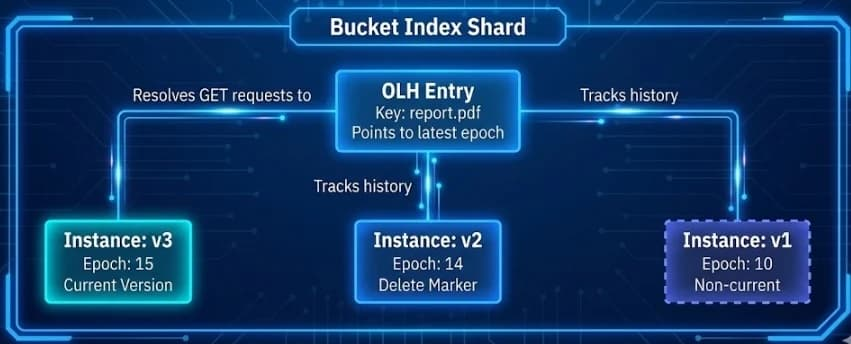

Ceph Object Storage Deep Dive Series Part 3: Version and Object Lock

Introduction ¶
In the first and second parts of this deep dive series, we dissected the core foundations of Ceph RGW: stateless frontends, specialized RADOS pools, bucket index mechanics, and the head/tail data layout. We explored how the Ceph Object Gateway(RGW) achieves massive scalability through dynamic bucket sharding and how background processes, including Garbage Collection and Lifecycle Management, automate data governance.
We now turn to two critical features for enterprise data protection: S3 Object Versioning and S3 Object Lock. These features transform the Ceph Object Gateway (RGW) from a simple object store into a robust data preservation platform capable of meeting regulatory compliance requirements, protecting against accidental deletions, and supporting immutable storage patterns.
In this third deep dive, we will first explore the concepts behind versioning and object lock from the S3 API perspective. Then, we'll peel back the layers to reveal how RGW implements these features internally, focusing on a crucial architectural component: the Object Logical Head (OLH). Understanding this mechanism is key to understanding how RGW efficiently maintains version history while preserving the performance characteristics we expect.
S3 Object Versioning: Concepts and Rationale ¶
Object versioning is a mechanism that allows users to preserve, retrieve, and restore every version of every object stored in a bucket. When versioning is enabled, each object modification (PUT) or deletion creates a new, immutable record rather than overwriting or removing existing data.
Why Versioning Matters ¶
Without versioning, object storage follows a "last write wins" model. Uploading an object with the same key as an existing object silently replaces it. A DELETE operation permanently removes the object. While simple, this model offers no protection against:
Accidental overwrites: A user uploads a corrupted file over a critical dataset
Accidental deletions: A script with a bug issues DELETE commands against production data
Malicious actions: A compromised credential is used to destroy data
Audit requirements: Regulations requiring historical record preservation
Versioning addresses all of these concerns by maintaining a complete history of every object. When combined with an RGW Archive Zone, versioned objects enable all of the above while enabling production buckets to be lean and mean.
Versioning States ¶
Each bucket has one of three versioning states:
| State | Behavior |
|---|---|
| Unversioned (Default) | Objects have a null version ID. Overwrites replace data; deletes remove data permanently. |
| Enabled | Every PUT creates a new version with a unique version ID. |
| Suspended | New writes get null version ID, but existing versions are preserved. |
Once versioning is enabled on a bucket, it can never be fully disabled, only suspended. This is a deliberate design choice to prevent accidental or malicious destruction of version history.
Version IDs and the Current Version ¶
When versioning is enabled, every write to an object generates a unique, system-assigned Version ID. This ID is an opaque string that uniquely identifies the object's version. When a client issues a GET request without specifying a version ID, RGW returns the current version: the most recently written version of that object.
# Create bucket
$ aws s3api create-bucket --bucket my-bucket
# Enable versioning on the bucket
$ aws s3api put-bucket-versioning --bucket my-bucket --versioning-configuration Status=Enabled
# Upload creates a new version
$ aws s3api put-object --bucket my-bucket --key report.pdf --body report.pdf
{
"ETag": "\"959f45520adcbe51b3d7b24e1379d3c0\"",
"ChecksumCRC64NVME": "viq2x5cBzls=",
"ChecksumType": "FULL_OBJECT",
"VersionId": "5ch0kwnw2Nv1l5JctIrUFDY1zd55.va"
}
# List all versions, currently there is only one
$ aws s3api list-object-versions --bucket my-bucket --prefix report.pdf | jq .Versions
[
{
"ETag": "\"959f45520adcbe51b3d7b24e1379d3c0\"",
"Size": 1012,
"StorageClass": "STANDARD",
"Key": "report.pdf",
"VersionId": "5ch0kwnw2Nv1l5JctIrUFDY1zd55.va",
"IsLatest": true,
"LastModified": "2025-12-05T11:37:52.802000+00:00",
"Owner": {
"DisplayName": "user",
"ID": "RGW42603947660038067"
}
}
]
# We do another PUT to the same Object/key
$ aws s3api put-object --bucket my-bucket --key report.pdf --body report.pdf
# We now have 2 versions of the same Object/Key
$ aws --profile kyle s3api list-object-versions --bucket my-bucket --prefix report.pdf | jq .Versions
[
{
"ETag": "\"959f45520adcbe51b3d7b24e1379d3c0\"",
"Size": 1012,
"Key": "report.pdf",
"VersionId": "QhSnbf7bYMGHMshc0S-fyF3.SPMjIju",
"IsLatest": true,
"LastModified": "2025-12-05T11:39:56.974000+00:00",
},
{
"ETag": "\"959f45520adcbe51b3d7b24e1379d3c0\"",
"Size": 1012,
"Key": "report.pdf",
"VersionId": "5ch0kwnw2Nv1l5JctIrUFDY1zd55.va",
"IsLatest": false,
"LastModified": "2025-12-05T11:37:52.802000+00:00",
}
]
Delete Markers: Soft Deletes ¶
When you delete an object in a versioned bucket (without specifying a version ID), RGW does not remove any data. Instead, it creates a special zero-byte object called a Delete Marker. This marker becomes the current version, causing subsequent GET requests to return a 404 Not Found error; even though all previous versions remain intact.
# Delete creates a marker, not actual deletion
$ aws s3api delete-object --bucket my-bucket --key report.pdf
{
"DeleteMarker": true,
"VersionId": "77d9Np158AOrYrDod98ev7EhONah2G."
}
# GET now returns 404, Because DeleteMarker's IsLatest is set to true
$ aws s3api get-object --bucket my-bucket --key report.pdf output.pdf
An error occurred (NoSuchKey) when calling the GetObject operation: Unknown
# But all versions still exist.
$ aws s3api list-object-versions --bucket my-bucket --prefix report.pdf
{
"DeleteMarkers": [
{
"Key": "report.pdf",
"VersionId": "77d9Np158AOrYrDod98ev7EhONah2G.",
"IsLatest": true
}
],
"Versions": [
{
"Key": "report.pdf",
"VersionId": "5ch0kwnw2Nv1l5JctIrUFDY1zd55.va",
"IsLatest": false,
"Size": 1012
},
...
]
}
Recovering Deleted Objects ¶
Recovery is straightforward: either delete the Delete Marker or copy a specific version back to the current position:
# Method 1: Remove the Delete Marker
$ aws s3api delete-object --bucket my-bucket --key report.pdf \
--version-id "77d9Np158AOrYrDod98ev7EhONah2G."
# Method 2: Copy a specific version to restore it as current
$ aws s3api copy-object \
--copy-source "my-bucket/report.pdf?versionId=5ch0kwnw2Nv1l5JctIrUFDY1zd55.va" \
--bucket my-bucket --key report.pdf
Permanent Deletion ¶
To permanently remove data from a versioned bucket, you must explicitly delete each version by specifying its version ID:
# Permanent deletion of the object requires the version ID of each version to get deleted
$ aws s3api delete-object --bucket my-bucket --key report.pdf \
--version-id "5ch0kwnw2Nv1l5JctIrUFDY1zd55.va"
Common Misconception: "Delete Markers" ¶
Question: "If I delete all versions of an object, will the delete markers be automatically removed by the garbage collection process?"
No! Delete markers are permanent metadata that preserve deletion history. They persist indefinitely unless explicitly removed:
Lifecycle policy:
{ "Rules": [ { "ID": "remove-expired-delete-markers", "Status": "Enabled", "Filter": {}, "Expiration": { "ExpiredObjectDeleteMarker": true } } ] }Manual deletion:
$ aws s3api delete-object --version-id <delete-marker-id>
Why this matters: With high-churn workloads (frequent PUT/DELETE cycles), delete markers accumulate silently, causing:
Bucket index bloat (millions of entries with no data)
Severe ListObjects performance degradation
The fix: Configure lifecycle policies for versioned buckets to periodically clean up expired delete markers.
Critical Consideration: Every Version is a Full Copy ¶
A crucial detail that catches many users off guard: each version is a complete, independent copy of the object. Unlike filesystem snapshots or incremental backups, S3 versioning does not store deltas or differences between versions. When you upload a 1 GB file and then modify a single byte, you now have two 1 GB objects stored in your cluster. Tiering however can be employed to shift older revisions to more cost-effective storage.
This design has significant implications for specific workloads:
| Workload Pattern | Impact with Versioning |
|---|---|
| Large files with frequent minor updates | Storage multiplies rapidly |
| Log files with append operations | Each append creates a complete copy |
| Database dumps are overwritten daily | N days = N complete copies |
| Configuration files are updated often | Manageable (small files) |
Example: The Log Append Anti-Pattern
Consider an application that appends log entries to an S3 object throughout the day:
# Hour 1: Create 10 MB log file
$ aws s3 cp app.log s3://versioned-bucket/logs/app.log # 10 MB stored
# Hour 2: Append 1 MB, re-upload
$ aws s3 cp app.log s3://versioned-bucket/logs/app.log # Now 11 MB + 10 MB = 21 MB total
# Hour 3: Append 1 MB, re-upload
$ aws s3 cp app.log s3://versioned-bucket/logs/app.log # Now 12 MB + 11 MB + 10 MB = 33 MB total
# After 24 hourly appends...
# Actual log data: ~34 MB
# Storage consumed: ~528 MB (sum of all versions)
For workloads that involve frequent modifications to large objects, consider these alternatives:
Use unique keys: Write
app-2025-01-15-10.log,app-2025-01-15-11.loginstead of overwritingDisable versioning selectively: Use separate buckets for append-heavy vs. versioning-critical data
Aggressive Lifecycle policies: Use
NoncurrentVersionExpirationwith short retention periods
Best Practice: Before enabling versioning on a bucket, analyze your workload patterns. Versioning is ideal for objects that change infrequently but need protection (documents, images, backups). It can be costly for objects that change constantly (logs, metrics, temporary files).
Operational Consideration: Bucket Index Sharding and Many Versions ¶
Another consideration for versioned buckets concerns how RGW manages the bucket index. As discussed in Part 2 of this series, RGW distributes bucket index entries across multiple shards to maintain performance. However, versioning introduces a constraint: entries for all versions of a single object must reside on the same bucket index shard.
This design has several implications:
Uneven Shard Distribution: Even with hashed sharding, a single object with thousands of versions can create "hot spots" where one shard holds significantly more entries than others. This undermines the even distribution that sharding is designed to provide.
Large omap Warnings: Each version of an object requires multiple index entries: approximately 2 + 2N entries for an object with N versions. Since all these entries must reside on the same shard, a single heavily-versioned object can push a shard past the RADOS “Large Object Warning“ threshold:
| Versions per Object | Approximate Index Entries | Thresholds Level |
|---|---|---|
| 1,000 | ~2,002 | Low |
| 50,000 | ~100,002 | Moderate |
| 100,000 | ~200,002 | Threshold exceeded |
When a shard exceeds 200,000 entries (the default osd_deep_scrub_large_omap_object_key_threshold), Ceph raiases a LARGE_OMAP_OBJECTS health warning.
Future Improvements: The RGW development team is actively working on enhancements to ordered bucket indexes that will allow version entries for a single object to span multiple index shards. This architectural change will effectively eliminate the current practical limit on the number of versions per object (currently constrained by omap size limits to roughly 100,000 in the worst case). This work is part of the broader ordered bucket index initiative discussed in Part 2 of our blog series.
S3 Object Lock: Immutable Storage ¶
While versioning protects against accidental changes, it doesn't prevent a privileged user from deliberately deleting all versions. S3 Object Lock provides an additional layer of protection by implementing Write-Once-Read-Many (WORM) semantics. Once an object is locked, it cannot be deleted or overwritten through the S3 endpoint, not even by an RGW admin account, until the lock expires.
Object Lock Prerequisites ¶
Object Lock has a critical prerequisite: versioning must be enabled. This tight coupling exists because Object Lock protects specific object versions rather than just object keys.
Historical Limitation (Pre-Tentacle) ¶
Before Ceph Tentacle, Object Lock could only be enabled at bucket creation time. This was a significant operational constraint: if you created a bucket without Object Lock and later needed WORM protection, your only option was to create a new bucket and migrate all data.
New in Ceph Tentacle ¶
Starting with Ceph Tentacle, you can now enable Object Lock on existing versioned buckets (ceph/ceph#62063). This removes a major operational pain point, allowing you to add compliance protection to production buckets without data migration.
Retention Modes: Governance vs. Compliance ¶
Object Lock supports two retention modes, each with different enforcement characteristics:
| Mode | Behavior |
|---|---|
| Governance | Regular users cannot delete protected objects. However, users with the s3:BypassGovernanceRetention permission can override the lock. Useful for internal policies that may require exceptions. |
| Compliance | Absolutely immutable. No user, including an RGW administrator, can delete the object or shorten the retention period through the S3 endpoint. Even the bucket owner cannot override. Required for regulatory compliance (SEC 17a-4, FINRA, etc.). |
Retention Periods ¶
A retention period specifies how long the lock remains in effect. Once set to Compliance mode, this period cannot be shortened; it can only be extended.
# Create a bucket with Object Lock Enabled
$ aws s3api create-bucket --bucket worm-bucket --object-lock-enabled-for-bucket
# Set retention on upload
$ aws s3api put-object --bucket worm-bucket --key financial-record.pdf \
--body financial-record.pdf \
--object-lock-mode COMPLIANCE \
--object-lock-retain-until-date "2032-12-31T23:59:59Z"
# Or set default retention for all objects in the bucket
$ aws s3api put-object-lock-configuration --bucket worm-bucket \
--object-lock-configuration '{
"ObjectLockEnabled": "Enabled",
"Rule": {
"DefaultRetention": {
"Mode": "COMPLIANCE",
"Years": 7
}
}
}'
Legal Hold: Indefinite Protection ¶
In addition to time-based retention, Object Lock supports Legal Hold, a flag that prevents deletion regardless of retention settings. Legal Hold acts as a binary switch (On/Off) and does not require a retention period; it remains in effect until explicitly removed. This is designed, for example, for litigation scenarios where data must be preserved indefinitely until legal proceedings conclude.
# Apply Legal Hold, Example version-id
$ aws s3api put-object-legal-hold --bucket worm-bucket \
--key evidence.pdf --version-id "abc123" \
--legal-hold Status=ON
# Remove Legal Hold (requires s3:PutObjectLegalHold permission)
$ aws s3api put-object-legal-hold --bucket worm-bucket \
--key evidence.pdf --version-id "abc123" \
--legal-hold Status=OFF
Important: An object can have both a retention period AND a Legal Hold. The object remains protected until BOTH conditions are cleared.
Regulatory Compliance: Third-Party Validation ¶
For organizations in regulated industries, Ceph's Object Lock implementation has been independently assessed by Cohasset Associates, a consulting firm specializing in records management and information governance. Their October 2023 compliance assessment confirms that Ceph with Object Lock meets the electronic recordkeeping requirements of:
SEC Rules 17a-4(f) and 18a-6(e): Non-rewriteable, non-erasable record format (WORM) requirements for broker-dealers and security-based swap entities
FINRA Rule 4511(c): Which defers to SEC Rule 17a-4 for format and media requirements
CFTC Rule 1.31(c)-(d): Principles-based requirements for commodity futures trading firms
Understanding Object Lock Protection Boundaries ¶
It's essential to understand what Object Lock protects against and what it does not. Object Lock enforcement occurs at the S3 API layer. When a DELETE request arrives at the Object Gateway (RGW) endpoint, the gateway checks the lock status and denies the operation if the object is protected. This means:
What Object Lock Protects Against:
Accidental deletion via S3 clients (aws cli, SDKs, applications)
Malicious deletion by compromised S3 credentials
Deletion by any user, including the bucket owner and RGW admin account (in Compliance mode)
Programmatic bulk deletions from rogue scripts or ransomware targeting S3 APIs
What Object Lock Does NOT Protect Against:
Direct RADOS-level operations (
rados rm,radosgw-admin bucket rm --purge-objects)Physical destruction of storage media
Cluster-level administrative actions by users with Ceph admin credentials
# This is blocked by Object Lock
$ aws s3api delete-object --bucket compliance-bucket --key locked-file.pdf --version-id abc123
An error occurred (AccessDenied) when calling the DeleteObject operation: forbidden by object lock
# But someone with RADOS admin access could still do this (DON'T DO THIS!)
$ rados -p default.rgw.buckets.data rm <bucket_marker>_locked-file.pdf
# This bypasses Object Lock entirely - the data is gone
This is not a limitation unique to Ceph; it's inherent to any software-enforced protection. Object Lock protects your data at the application layer (S3 API), but someone with root access to the underlying storage infrastructure operates at a different trust boundary entirely.
Object Lock provides strong protection against S3-layer threats and satisfies regulatory requirements (SEC 17a-4, etc.) when combined with appropriate access controls at the infrastructure layer. The RADOS bypass scenario requires privileged cluster access that should be tightly controlled and audited through separate mechanisms.
RGW Internals: The Object Logical Head (OLH) ¶
Now that we understand the API semantics, let's examine how RGW implements versioning under the hood. This is where the Object Logical Head (OLH) becomes essential.
The Problem: Resolving Ambiguity ¶
Consider a simple GET request: GET /bucket/photo.jpg. In an unversioned bucket, this is unambiguous: there's exactly one object with that key. But with versioning enabled, "photo.jpg" could have dozens of versions. Which one should RGW return?
The naive solution is to scan all versions and select the one with the most recent timestamp. But this approach has profound performance implications:
Every GET would require a range scan of the bucket index
The cost would grow linearly with the number of versions
Concurrent writes could create race conditions
RGW solves this with a layer of indirection: the Object Logical Head.
What is the OLH? ¶
The OLH is a mechanism that tracks which version instance is the "current" version of an object. When you access photo.jpg without a version ID, RGW uses the OLH to determine which version instance to return.
The Ceph source code defines distinct entry types in the bucket index (cls_rgw_types.h):
enum class BIIndexType : uint8_t {
Invalid = 0,
Plain = 1, // Non-versioned object entries
Instance = 2, // Individual version instances
OLH = 3, // Object Logical Head
};
When versioning is enabled:
Each object version is stored as an Instance entry with a unique version ID
The OLH entry tracks which instance is current
Non-versioned objects use Plain entries
OLH Epochs: Ordering Versions ¶
RGW uses an olh_epoch counter to establish version ordering. As described in the Ceph GitHub repo:
Note: "The existing algorithm uses an OLH epoch, incremented with each new version of a name, that is used to sort its versions from newest to oldest."* — ceph/ceph PR #31325
When a new version is written:
The
olh_epochis incrementedA new Instance entry is created in the bucket index
The OLH is updated to reflect the new current version
This epoch-based approach ensures consistent ordering even in concurrent write scenarios and is critical for multi-site replication where versions may arrive out of order.

The OLH Log ¶
The OLH mechanism includes an olh_log that records modifications to the version history. Rather than updating the OLH pointer directly, changes are logged and then applied. This log-based approach:
Enables safe concurrent modifications
Supports multi-site synchronization (each zone maintains its own
olh_log)Allows recovery from partial failures
The olh_log is processed by functions like apply_olh_log() in the RGW codebase, which evaluates pending changes and updates the current version pointer accordingly.
Delete Markers and the OLH ¶
When deleting an object in a versioned bucket, RGW creates a Delete Marker using a dedicated operation (CLS_RGW_OP_LINK_OLH_DM). This operation:
Creates a special zero-byte Instance entry marked as a delete marker
Updates the OLH to point to this delete marker as the current version
Subsequent GET requests (without a version ID) will resolve to the delete marker and return 404, while direct version access still works for all previous versions.
Examining the Bucket Index ¶
You can examine the bucket index entries using radosgw-admin:
$ radosgw-admin bi list --bucket my-bucket
The OLH Entry tracks the current version:
{
"type": "olh",
"idx": "�1001_report.pdf",
"entry": {
"key": {
"name": "report.pdf",
"instance": "sTsGobhZm2cGravZvOmc9IbpXgIEM8R"
},
"delete_marker": false,
"epoch": 6,
"pending_log": [],
"exists": true
}
}
The OLH tells us: the current version of report.pdf is instance sTsGobhZm2cGravZvOmc9IbpXgIEM8R. The current epoch is 6, and it's not a delete marker.
Instance Type Entries exist for each version of the object:
{
"type": "instance",
"idx": "�1000_report.pdf\u0000isTsGobhZm2cGravZvOmc9IbpXgIEM8R",
"entry": {
"name": "report.pdf",
"instance": "sTsGobhZm2cGravZvOmc9IbpXgIEM8R",
"exists": true,
"meta": {
"size": 1012,
"mtime": "2025-12-05T11:47:54.163133Z",
"etag": "959f45520adcbe51b3d7b24e1379d3c0"
},
"versioned_epoch": 6
}
}
Notice how versioned_epoch establishes ordering. Our three versions have epochs 2, 3, and 6; the OLH points to epoch 6, confirming it's the current version.
When we delete report.pdf without specifying a version ID, a Delete Marker is created:
$ aws s3api delete-object --bucket my-bucket --key report.pdf
{
"DeleteMarker": true,
"VersionId": "NtxFanesdl99IjNYXyJ-QGSGNETrlko"
}
Now the OLH has changed:
{
"type": "olh",
"idx": "�1001_report.pdf",
"entry": {
"key": {
"name": "report.pdf",
"instance": "NtxFanesdl99IjNYXyJ-QGSGNETrlko"
},
"delete_marker": true,
"epoch": 7,
"pending_log": [],
"exists": true
}
}
The OLH now points to a new instance with "delete_marker": true and epoch 7. The delete marker's instance entry confirms it's a zero-byte marker:
{
"type": "instance",
"idx": "�1000_report.pdf\u0000iNtxFanesdl99IjNYXyJ-QGSGNETrlko",
"entry": {
"name": "report.pdf",
"instance": "NtxFanesdl99IjNYXyJ-QGSGNETrlko",
"exists": false,
"meta": {
"size": 0,
"mtime": "2025-12-05T13:35:37.561880Z"
},
"tag": "delete-marker",
"versioned_epoch": 7
}
}
The radosgw-admin object stat command can be usefull providing a higher-level view down to a specific object-version:
$ radosgw-admin object stat --bucket my-bucket --object report.pdf
$ radosgw-admin object stat --bucket my-bucket --object report.pdf --object-version sTsGobhZm2cGravZvOmc9IbpXgIEM8R
This shows the object's metadata, manifest, and version information from RGW's perspective.
Key Takeaways ¶
The OLH mechanism provides several essential properties:
- Efficient lookups: GET requests without a version ID can quickly resolve to the current version without scanning all versions
- Consistent ordering: The epoch-based system ensures deterministic version ordering
- Multi-site compatibility: The
olh_logdesign supports replication scenarios where versions may be created concurrently in different zones - Safe concurrent access*: The log-and-apply model handles race conditions between concurrent writers
Lifecycle Management with Versioning ¶
As we discussed in Part 2, Lifecycle management automates data governance through policy-based rules. With versioning enabled, lifecycle policies gain additional capabilities for managing version history.
Expiration Actions for Versioned Buckets ¶
| Action | Effect |
|---|---|
Expiration (Days/Date) | Adds a Delete Marker to current versions (does not delete data) |
NoncurrentVersionExpiration | Permanently deletes noncurrent versions after specified days |
ExpiredObjectDeleteMarker | Removes Delete Markers when they're the only remaining version |
NewerNoncurrentVersions | Limits how many noncurrent versions to retain |
Example: Version Retention Policy ¶
This policy keeps the current version indefinitely, retains the last three noncurrent versions, and permanently deletes older noncurrent versions after 90 days:
{
"Rules": [
{
"ID": "Version Retention Policy",
"Status": "Enabled",
"Filter": {
"Prefix": ""
},
"NoncurrentVersionExpiration": {
"NoncurrentDays": 90,
"NewerNoncurrentVersions": 3
},
"Expiration": {
"ExpiredObjectDeleteMarker": true
}
}
]
}
Apply the policy using the AWS CLI:
$ aws --endpoint=http://rgw:80 s3api put-bucket-lifecycle-configuration --bucket versioned-bucket --lifecycle-configuration file://lifecycle-policy.json
Understanding NoncurrentVersionExpiration Parameters ¶
The NoncurrentVersionExpiration rule takes two parameters that work together to control version retention:
"NoncurrentVersionExpiration": {
"NoncurrentDays": 90,
"NewerNoncurrentVersions": 3
}
How it works: Both conditions must be true for a version to be deleted:
- Version must be noncurrent for at least
NoncurrentDays(90 days), AND - There must be more than
NewerNoncurrentVersions(3) newer noncurrent versions
Let's say you have an object report.pdf with this version history:
Current version (latest):
└─ v10 - 2025-12-11 (current version, not affected by this rule)
Noncurrent versions (older versions):
├─ v9 - 2025-12-10 (1 day noncurrent) ← Newer noncurrent #1
├─ v8 - 2025-12-08 (3 days noncurrent) ← Newer noncurrent #2
├─ v7 - 2025-12-05 (6 days noncurrent) ← Newer noncurrent #3
├─ v6 - 2025-09-01 (102 days noncurrent) ✅ DELETE (>90 days AND >3 newer versions)
├─ v5 - 2025-08-15 (118 days noncurrent) ✅ DELETE
├─ v4 - 2025-08-01 (132 days noncurrent) ✅ DELETE
├─ v3 - 2025-07-15 (149 days noncurrent) ✅ DELETE
├─ v2 - 2025-07-01 (163 days noncurrent) ✅ DELETE
└─ v1 - 2025-06-15 (179 days noncurrent) ✅ DELETE
Lifecycle and Object Lock Interaction ¶
When both Lifecycle policies and Object Lock are active, Object Lock takes precedence. If a Lifecycle rule attempts to delete a locked object version, the deletion is blocked:

This ensures that compliance requirements always take precedence over automated cleanup policies.
Cloud Transition and Object Lock ¶
RGW's policy-based cloud transition feature allows you to tier data to external S3-compatible endpoints (public cloud, tape gateways, etc.) using Lifecycle policies. When Object Lock is active, locked objects are automatically skipped during cloud transitions to preserve the WORM contract.
This behavior is intentional: cloud transition is a destructive operation from Ceph's perspective: after transition, the local copy is typically removed and replaced with a stub. Allowing this for locked objects would violate the immutability guarantee.
From the RGW lifecycle code (rgw_lc.cc):
if (!oc.o.is_current() &&
!pass_object_lock_check(oc.driver, oc.obj.get(), oc.dpp)) {
/* Skip objects which has object lock enabled. */
ldpp_dout(oc.dpp, 10) << "Object(key:" << oc.o.key
<< ") is locked. Skipping transition to cloud-s3 tier"
<< dendl;
return 0;
}
This ensures that compliance data remains on your Ceph cluster until the retention period expires, regardless of any cloud tiering policies that might otherwise apply.
Operational Considerations ¶
Storage Capacity Planning ¶
With versioning enabled, storage consumption can grow rapidly:
Every modification creates a new complete object version
Delete operations don't free space (they add Delete Markers)
Space is only reclaimed when versions are permanently deleted
Monitoring recommendation: Track both logical (S3-reported) and physical (RADOS-reported) usage:
# S3-level bucket statistics
$ radosgw-admin bucket stats --bucket versioned-bucket | jq '.usage'
# RADOS pool usage
$ ceph df detail
You may find it useful to add this or other rgw-exporter to your Prometheus staack.
Index Shard Sizing for Versioned Buckets ¶
Each object version creates additional entries in the bucket index. A bucket with one million objects and an average of ten versions per object has 10 million index entries. Plan shard counts accordingly:
# Check current shard count
$ radosgw-admin bucket stats --bucket versioned-bucket | jq '.num_shards'
# Consider pre-sharding for expected growth
$ radosgw-admin bucket reshard --bucket versioned-bucket --num-shards XXX
Note that as of December 2025 there is work underway to enhance dynamic resharding to account for versioned objects. Clusters running earlier releases should factor versioning into their manual shard count or dynamic resharding threshold.
MFA Delete for Additional Security ¶
RGW supports MFA Delete, which requires multi-factor authentication to permanently delete object versions or change a bucket's versioning state.
# Generate current TOTP code
$ oathtool -d6 --totp b4902c641a1363541b32abc2a26817
293651
# Enable MFA Delete (note: serial + space + code)
$ aws --endpoint=http://rgw:80 s3api put-bucket-versioning \
--bucket secure-bucket \
--versioning-configuration MFADelete=Enabled,Status=Enabled \
--mfa "my-mfa-device 293651"
Once enabled, any attempt to permanently delete a version without providing a valid MFA code will fail with AccessDenied.
For complete MFA setup instructions, including creating TOTP tokens with radosgw-admin mfa create, see the Ceph Object Gateway Multi-Factor Authentication documentation.
Conclusion: The Complete Data Protection Stack ¶

Across this third deep dive, we've explored how Ceph RGW implements two cornerstone features for enterprise data protection. Versioning provides a complete history of every object, enabling recovery from accidental modifications and deletions. Object Lock adds WORM semantics for regulatory compliance and ransomware protection.
At the heart of these features is the Object Logical Head (OLH), an elegant architectural solution that maintains version history efficiently through a layer of indirection.
Combined with the Lifecycle Management capabilities from Part 2, you now have a complete picture of RGW's data governance stack:
- Versioning + OLH: Preserves history and enables point-in-time recovery
- Object Lock: Enforces immutability for compliance
- Lifecycle Management: Automates version cleanup within policy constraints
- Garbage Collection: Reclaims space from permanently deleted versions
In upcoming articles, we'll continue our exploration of topics that include multi-site replication, and STS/IAM integration. Stay tuned!
The authors would like to thank IBM for supporting the community with our time to create these posts.